We will use multiple approaches for modelling non-linearity and apply it to the Boston dataset included in the R library MASS. This dataset consists of 506 samples. The response variable is median value of owner-occupied homes in Boston (medv). The dataset has 13 associated predictor variables.
For convenience we can name the response as y and the predictor x. We will also pre-define the labels for the x and y-axes that we will use repeatedly in figures throughout this practical.
y = Boston$medvx = Boston$lstaty.lab ='Median Property Value'x.lab ='Lower Status (%)'
plot( x, y, cex.lab =1.1, col="darkgrey", xlab = x.lab, ylab = y.lab, main ="", bty ='l' )
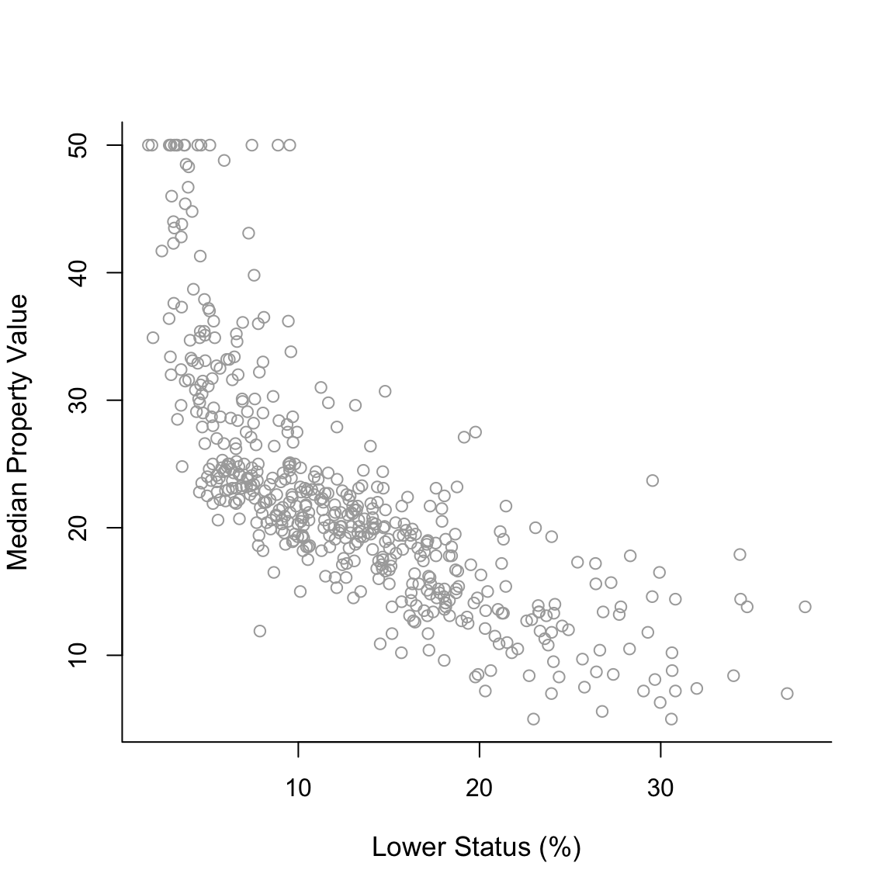
Polynomial Regression
Start by fitting to the data a degree-2 polynomial using the command lm() and summarizing the results using summary().
poly2 =lm(y ~poly(x, 2, raw =TRUE))summary(poly2)
Call:
lm(formula = y ~ poly(x, 2, raw = TRUE))
Residuals:
Min 1Q Median 3Q Max
-15.2834 -3.8313 -0.5295 2.3095 25.4148
Coefficients:
Estimate Std. Error t value Pr(>|t|)
(Intercept) 42.862007 0.872084 49.15 <2e-16 ***
poly(x, 2, raw = TRUE)1 -2.332821 0.123803 -18.84 <2e-16 ***
poly(x, 2, raw = TRUE)2 0.043547 0.003745 11.63 <2e-16 ***
---
Signif. codes: 0 '***' 0.001 '**' 0.01 '*' 0.05 '.' 0.1 ' ' 1
Residual standard error: 5.524 on 503 degrees of freedom
Multiple R-squared: 0.6407, Adjusted R-squared: 0.6393
F-statistic: 448.5 on 2 and 503 DF, p-value: < 2.2e-16
The argument raw = TRUE In terms of fitting the curve poly(x, 2, raw = TRUE)) and poly(x, 2)) will give the same result! They are just based on different (orthogonal) basis but with polynomial regression we are almost never interested in the regression coefficients.
For plotting th results, we need to create an object, which we name sort.x, which has the sorted values of predictor x in a ascending order. Without sort.x we will not be able to produce the plots since in lecture. Then, we need to use predict() with sort.x as input in order to proceed to the next steps.
sort.x =sort(x)sort.x[1:10] # the first 10 sorted values of x
pred2 =predict(poly2, newdata =list(x = sort.x), se =TRUE)names(pred2)
[1] "fit" "se.fit" "df" "residual.scale"
The object pred2 contains fit, which are the fitted values, and se.fit, which are the standard errors of the mean prediction, that we need in order to construct the approximate 95% confidence intervals (of the mean prediction). With this information we can construct the confidence intervals using cbind(). Lets see how the first 10 fitted values and confidence intervals look like.
pred2$fit[1:10] # the first 10 fitted values of the curve
plot(x, y, cex.lab =1.1, col="darkgrey", xlab = x.lab, ylab = y.lab,main ="Degree-2 polynomial", bty ='l')lines(sort.x, pred2$fit, lwd =2, col ="firebrick")matlines(sort.x, se.bands2, lwd =1.4, col ="firebrick", lty =3)
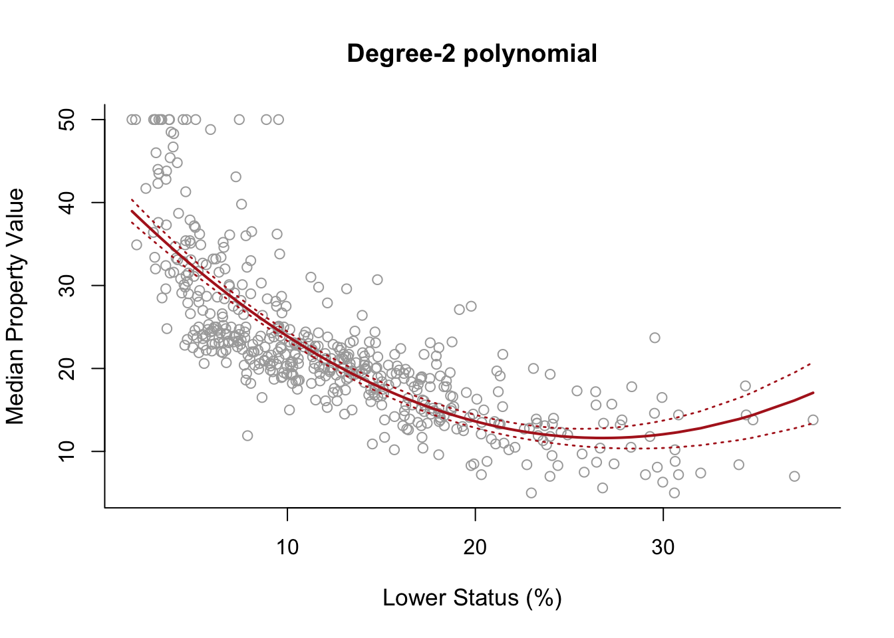
Note: We use lines() for pred2$fit because this is a vector, but for se.bands2, which is a matrix, we have to use matlines().
Then we do similar steps to produce a plot of degree-2 up to degree-5 polynomial fits.
poly3 =lm(y ~poly(x, 3))poly4 =lm(y ~poly(x, 4))poly5 =lm(y ~poly(x, 5))pred3 =predict(poly3, newdata =list(x = sort.x), se =TRUE)pred4 =predict(poly4, newdata =list(x = sort.x), se =TRUE)pred5 =predict(poly5, newdata =list(x = sort.x), se =TRUE)se.bands3 =cbind(pred3$fit +2*pred3$se.fit, pred3$fit-2*pred3$se.fit)se.bands4 =cbind(pred4$fit +2*pred4$se.fit, pred4$fit-2*pred4$se.fit)se.bands5 =cbind(pred5$fit +2*pred5$se.fit, pred5$fit-2*pred5$se.fit)par(mfrow =c(2,2))# Degree-2plot(x, y, cex.lab =1.1, col="darkgrey", xlab = x.lab, ylab = y.lab,main ="Degree-2 polynomial", bty ='l')lines(sort.x, pred2$fit, lwd =2, col ="firebrick")matlines(sort.x, se.bands2, lwd =2, col ="firebrick", lty =3)# Degree-3plot(x, y, cex.lab =1.1, col="darkgrey", xlab = x.lab, ylab = y.lab,main ="Degree-3 polynomial", bty ='l')lines(sort.x, pred3$fit, lwd =2, col ="darkviolet")matlines(sort.x, se.bands3, lwd =2, col ="darkviolet", lty =3)# Degree-4plot(x, y, cex.lab =1.1, col="darkgrey", xlab = x.lab, ylab = y.lab,main ="Degree-4 polynomial", bty ='l')lines(sort.x, pred4$fit, lwd =2, col ="royalblue")matlines(sort.x, se.bands4, lwd =2, col ="royalblue", lty =3)# Degree-5plot(x, y, cex.lab =1.1, col="darkgrey", xlab = x.lab, ylab = y.lab,main ="Degree-5 polynomial", bty ='l')lines(sort.x, pred5$fit, lwd =2, col ="darkgreen")matlines(sort.x, se.bands5, lwd =2, col ="darkgreen", lty =3)
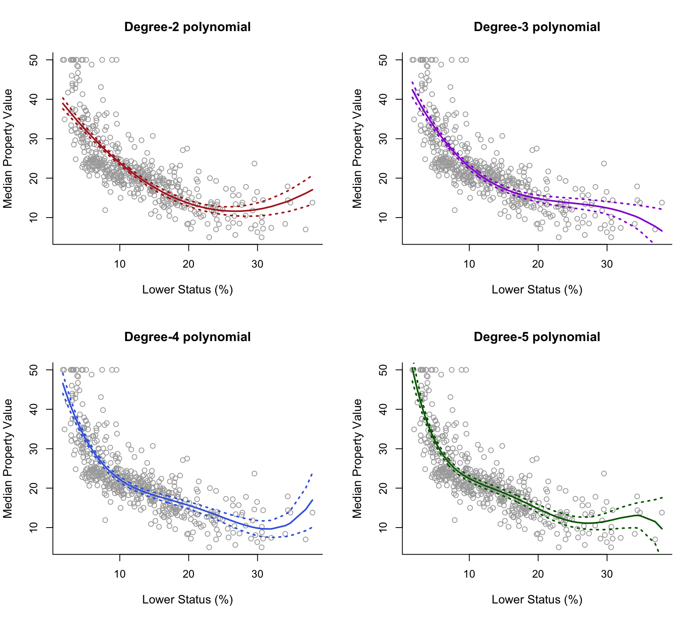
All four curves look reasonable given the data available. We may choose the degree-2 polynomial since it is simpler and seems to do about as well as the others. However, if we want to base our decision on a more formal procedure, we can use analysis-of-variance (ANOVA). Specifically, we will perform sequential comparisons based on the F-test, comparing first the linear model vs. the quadratic model (degree-2 polynomial), then the quadratic model vs. the cubic model (degree-3 polynomial) and so on. We therefore have to fit the simple linear model, and we also choose to fit the degree-6 polynomial to investigate the effects of an additional predictor as well. We can perform this analysis in RStudio using the command anova() as displayed below.
Analysis of Variance Table
Model 1: y ~ x
Model 2: y ~ poly(x, 2, raw = TRUE)
Model 3: y ~ poly(x, 3)
Model 4: y ~ poly(x, 4)
Model 5: y ~ poly(x, 5)
Model 6: y ~ poly(x, 6)
Res.Df RSS Df Sum of Sq F Pr(>F)
1 504 19472
2 503 15347 1 4125.1 151.8623 < 2.2e-16 ***
3 502 14616 1 731.8 26.9390 3.061e-07 ***
4 501 13968 1 647.8 23.8477 1.406e-06 ***
5 500 13597 1 370.7 13.6453 0.0002452 ***
6 499 13555 1 42.4 1.5596 0.2123125
---
Signif. codes: 0 '***' 0.001 '**' 0.01 '*' 0.05 '.' 0.1 ' ' 1
Which model would you choose?
Step Functions
For step function regression we can make use of the command cut(), which automatically assigns samples to intervals given a specific number of intervals. We can check how this works by executing the following syntax:
table(cut(x, 2))
(1.69,19.9] (19.9,38]
430 76
What we see is that cut(x, 2) automatically created a factor with two levels, corresponding to the intervals \((1.69,19.9]\) and \((19.9,38]\) and assigned each entry in x to one of these factors depending on which interval it was in. The command table() tells us that 430 samples of x fall within the first interval and that 76 samples fall within the second interval. Note that cut(x, 2) generated 2 intervals, but this means there is only 1 cutpoint (at 19.9). The number of cutpoints is naturally one less than the number of intervals, but it is important to be aware that cut requires specification of the number of required intervals.
So, we can use cut() within lm() to easily fit regression models with step functions. Below we consider 4 models with 1, 2, 3 and 4 cutpoints (2, 3, 4 and 5 intervals) respectively.
The analysis then is essentially the same as previously. We plot the fitted lines of the four models, along with approximate 95% confidence intervals for the mean predictions.
pred2 =predict(step2, newdata =list(x =sort(x)), se =TRUE)pred3 =predict(step3, newdata =list(x =sort(x)), se =TRUE)pred4 =predict(step4, newdata =list(x =sort(x)), se =TRUE)pred5 =predict(step5, newdata =list(x =sort(x)), se =TRUE)se.bands2 =cbind(pred2$fit +2*pred2$se.fit, pred2$fit-2*pred2$se.fit)se.bands3 =cbind(pred3$fit +2*pred3$se.fit, pred3$fit-2*pred3$se.fit)se.bands4 =cbind(pred4$fit +2*pred4$se.fit, pred4$fit-2*pred4$se.fit)se.bands5 =cbind(pred5$fit +2*pred5$se.fit, pred5$fit-2*pred5$se.fit)par(mfrow =c(2,2))plot(x, y, cex.lab =1.1, col="darkgrey", xlab = x.lab, ylab = y.lab,main ="1 cutpoint", bty ='l')lines(sort(x), pred2$fit, lwd =2, col ="firebrick")matlines(sort(x), se.bands2, lwd =1.4, col ="firebrick", lty =3)plot(x, y, cex.lab =1.1, col="darkgrey", xlab = x.lab, ylab = y.lab,main ="2 cutpoints", bty ='l')lines(sort(x), pred3$fit, lwd =2, col ="darkviolet")matlines(sort(x), se.bands3, lwd =1.4, col ="darkviolet", lty =3)plot(x, y, cex.lab =1.1, col="darkgrey", xlab = x.lab, ylab = y.lab,main ="3 cutpoints", bty ='l')lines(sort(x), pred4$fit, lwd =2, col ="royalblue")matlines(sort(x), se.bands4, lwd =1.4, col ="royalblue", lty =3)plot(x, y, cex.lab =1.1, col="darkgrey", xlab = x.lab, ylab = y.lab,main ="4 cutpoints", bty ='l')lines(sort(x), pred5$fit, lwd =2, col ="darkgreen")matlines(sort(x), se.bands5, lwd =1.4, col ="darkgreen", lty =3)
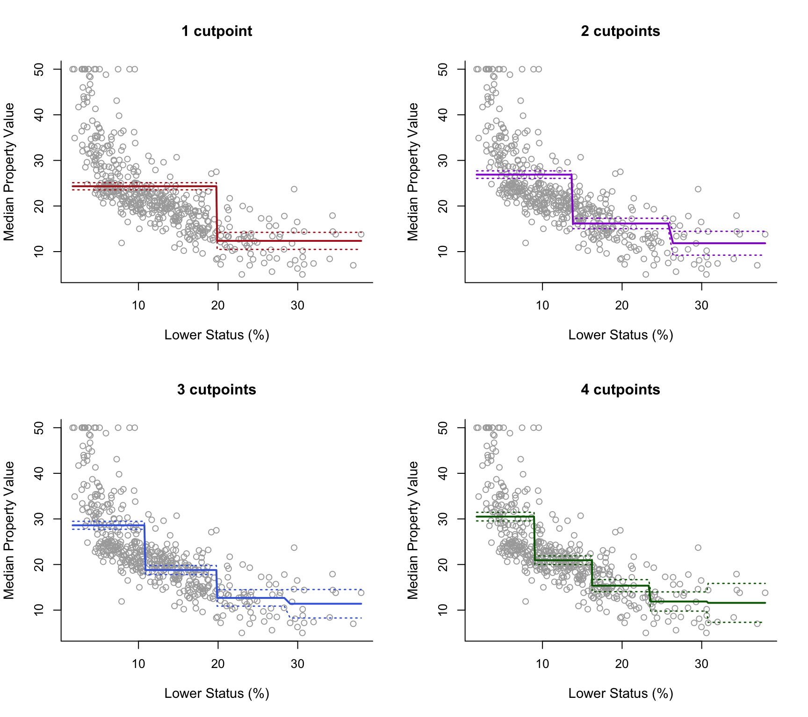
Note that we do not necessarily need to rely on the automatic selections of cutpoints used by cut(). We can define the intervals if we want to. For instance, if we want cutpoints at 10, 20 and 30 we can do the following
For this analysis we will require package splines.
library(splines)
Initially let’s fit regression splines by specifying knots. From the previous plot it is not clear where exactly we should place knots, so we will make use of the command summary in order to find the 25th, 50th and 75th percentiles ofx, which will be the positions where we will place the knots. We also sort the variable x before fitting the splines.
summary(x)
Min. 1st Qu. Median Mean 3rd Qu. Max.
1.73 6.95 11.36 12.65 16.95 37.97
cuts =summary(x)[c(2, 3, 5)] cuts
1st Qu. Median 3rd Qu.
6.950 11.360 16.955
sort.x =sort(x)
For a start lets fit a linear spline using our selected placement of knots. For this we can use command lm() and inside it we use the command bs() in which we specify degree = 1 for a linear spline and knots = cuts for the placement of the knots at the three percentiles. We also calculate the corresponding fitted values and confidence intervals exactly in the same way we did in previous practical demonstrations.
plot(x, y, cex.lab =1.1, col="darkgrey", xlab = x.lab, ylab = y.lab, main ="Linear Spline", bty ='l')lines(sort.x, pred1$fit, lwd =2, col ="firebrick")matlines(sort.x, se.bands1, lwd =2, col ="firebrick", lty =3)
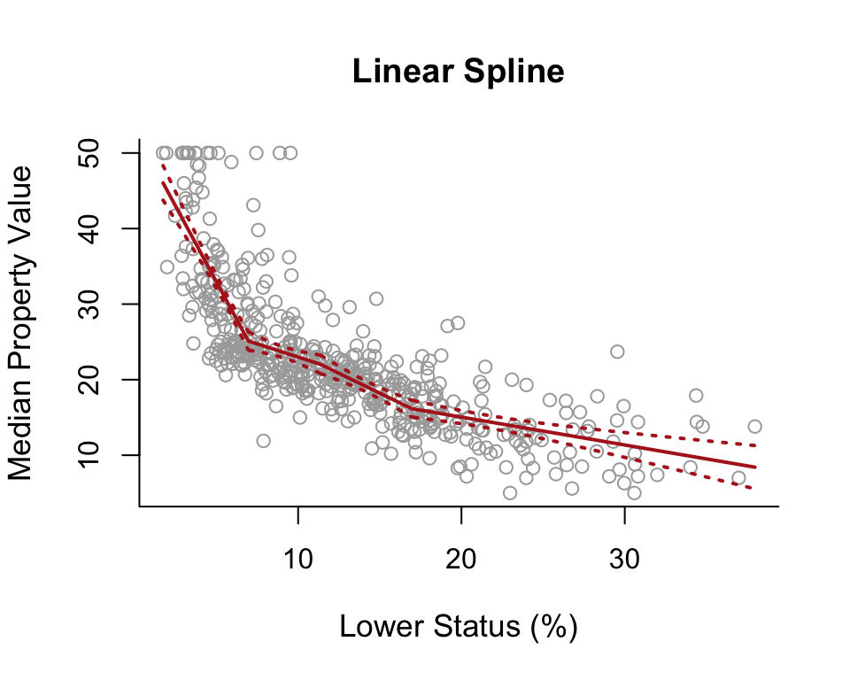
Using ?bs we see that instead of using the argument knots we can use the argument df, which are the degrees of freedom. Splines have \((d+1)+K\) degrees of freedom, where \(d\) is the degree of the polynomial and \(K\) the number of knots. So in this case we have 1+1+3 = 5 degrees of freedom. Selecting df = 5 in bs() will automatically use 3 knots placed at the 25th, 50th and 75th percentiles. Below we check whether the plot based on df=5 is indeed the same as the previous plot and as we can see it is.
spline1df =lm(y ~ splines::bs(x, degree =1, df =5))pred1df =predict(spline1df, newdata =list(x = sort.x), se =TRUE)se.bands1df =cbind( pred1df$fit +2* pred1df$se.fit, pred1df$fit -2* pred1df$se.fit )par(mfrow =c(1, 2))plot(x, y, cex.lab =1.1, col="darkgrey", xlab = x.lab, ylab = y.lab, main ="Linear Spline (with knots)", bty ='l')lines(sort.x, pred1$fit, lwd =2, col ="firebrick")matlines(sort.x, se.bands1, lwd =2, col ="firebrick", lty =3)plot(x, y, cex.lab =1.1, col="darkgrey", xlab = x.lab, ylab = y.lab, main ="Linear Spline (with df)", bty ='l')lines(sort.x, pred1df$fit, lwd =2, col ="firebrick")matlines(sort.x, se.bands1df, lwd =2, col ="firebrick", lty =3)matlines(sort.x, se.bands1, lwd =2, col ="firebrick", lty =3)
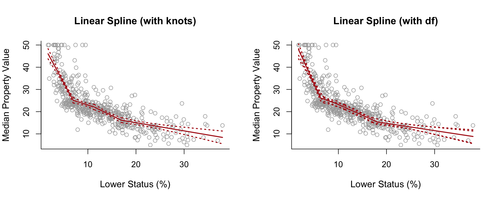
Having seen how this works we can also fit a degree-2 (quadratic) and degree-3 (cubic) spline to the data, all we have to do is change degree = 1 to degree = 2 and degree = 3 respectively. Also we increase the respective degrees of freedom from df = 5 to df = 6 and df = 7 in order to keep the same number (and position) of knots in the quadratic and cubic spline models.
spline2 =lm(y ~ splines::bs(x, degree =2, df =6))pred2 =predict(spline2, newdata =list(x = sort.x), se =TRUE)se.bands2 =cbind(pred2$fit +2* pred2$se.fit, pred2$fit -2* pred2$se.fit)spline3 =lm(y ~ splines::bs(x, degree =3, df =7))pred3 =predict(spline3, newdata =list(x = sort.x), se =TRUE)se.bands3 =cbind(pred3$fit +2* pred3$se.fit, pred3$fit -2* pred3$se.fit)par(mfrow =c(1,3))plot(x, y, cex.lab =1.1, col="darkgrey", xlab = x.lab, ylab = y.lab, main ="Linear Spline", bty ='l')lines(sort.x, pred1$fit, lwd =2, col ="firebrick")matlines(sort.x, se.bands1, lwd =2, col ="firebrick", lty =3)plot(x, y, cex.lab =1.1, col="darkgrey", xlab = x.lab, ylab = y.lab, main ="Quadratic Spline", bty ='l')lines(sort.x, pred2$fit, lwd =2, col ="darkgreen")matlines(sort.x, se.bands2, lwd =2, col ="darkgreen", lty =3)plot(x, y, cex.lab =1.1, col="darkgrey", xlab = x.lab, ylab = y.lab, main ="Cubic Spline", bty ='l')lines(sort.x, pred3$fit, lwd =2, col ="royalblue")matlines(sort.x, se.bands3, lwd =2, col ="royalblue", lty =3)
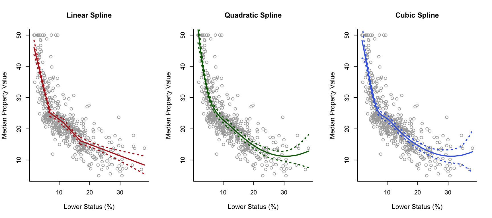
Natural Splines
For natural splines, we can use the command ns(). As with the command bs() previously, we again have the option to either specify the knots manually (via the argument knots) or to simply pre-define the degrees of freedom (via the argument df). Below we use the latter option to fit four natural splines with 1, 2, 3 and 4 degrees of freedom. As we see using 1 degree of freedom actually results in just a linear model.
spline.ns1 =lm(y ~ splines::ns(x, df =1))pred.ns1 =predict(spline.ns1, newdata =list(x = sort.x), se =TRUE)se.bands.ns1 =cbind(pred.ns1$fit +2* pred.ns1$se.fit, pred.ns1$fit -2* pred.ns1$se.fit)spline.ns2 =lm(y ~ splines::ns(x, df =2))pred.ns2 =predict(spline.ns2, newdata =list(x = sort.x), se =TRUE)se.bands.ns2 =cbind(pred.ns2$fit +2* pred.ns2$se.fit, pred.ns2$fit -2* pred.ns2$se.fit)spline.ns3 =lm(y ~ splines::ns(x, df =3))pred.ns3 =predict(spline.ns3, newdata =list(x = sort.x), se =TRUE)se.bands.ns3 =cbind(pred.ns3$fit +2* pred.ns3$se.fit, pred.ns3$fit -2* pred.ns3$se.fit)spline.ns4 =lm(y ~ splines::ns(x, df =4))pred.ns4 =predict(spline.ns4, newdata =list(x = sort.x), se =TRUE)se.bands.ns4 =cbind(pred.ns4$fit +2* pred.ns4$se.fit, pred.ns4$fit -2* pred.ns4$se.fit)par(mfrow =c(2, 2))plot(x, y, cex.lab =1.1, col="darkgrey", xlab = x.lab, ylab = y.lab, main ="Natural Spline (1 df)", bty ='l')lines(sort.x, pred.ns1$fit, lwd =2, col ="firebrick")matlines(sort.x, se.bands.ns1, lwd =2, col ="firebrick", lty =3)plot(x, y, cex.lab =1.1, col="darkgrey", xlab = x.lab, ylab = y.lab, main ="Natural Spline (2 df)", bty ='l')lines(sort.x, pred.ns2$fit, lwd =2, col ="darkviolet")matlines(sort.x, se.bands.ns2, lwd =2, col ="darkviolet", lty =3)plot(x, y, cex.lab =1.1, col="darkgrey", xlab = x.lab, ylab = y.lab, main ="Natural Spline (3 df)", bty ='l')lines(sort.x, pred.ns3$fit, lwd =2, col ="royalblue")matlines(sort.x, se.bands.ns3, lwd =2, col ="royalblue", lty =3)plot(x, y, cex.lab =1.1, col="darkgrey", xlab = x.lab, ylab = y.lab, main ="Natural Spline (4 df)", bty ='l')lines(sort.x, pred.ns4$fit, lwd =2, col ="darkgreen")matlines(sort.x, se.bands.ns4, lwd =2, col ="darkgreen", lty =3)
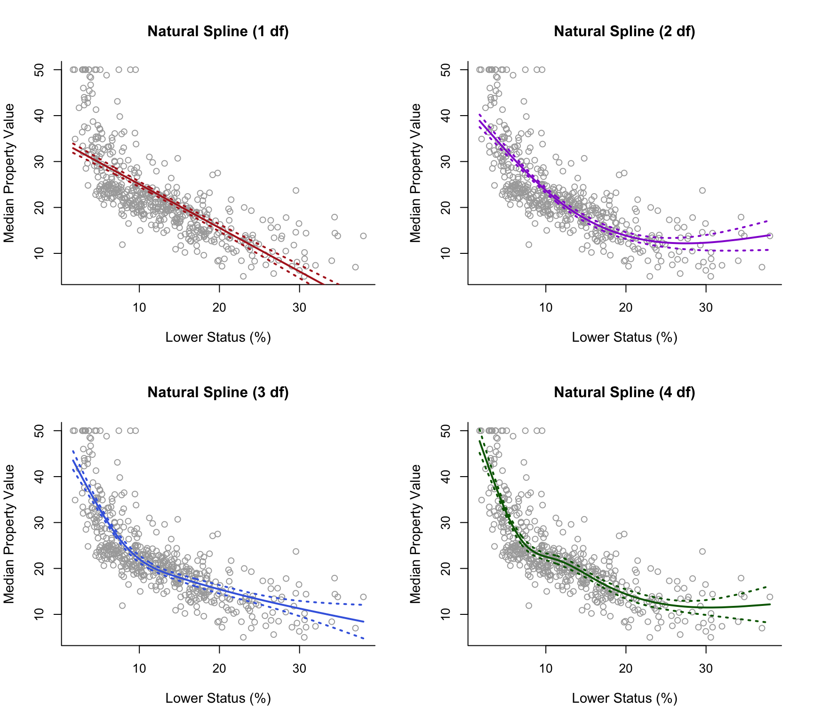
Below we plot the cubic spline next to the natural cubic spline for comparison. As we can see, the natural cubic spline is generally smoother and closer to linear on the right boundary of the predictor space, where it has, additionally, narrower confidence intervals in comparison to the cubic spline.
par(mfrow =c(1,2))plot(x, y, cex.lab =1.1, col="darkgrey", xlab = x.lab, ylab = y.lab, main ="Cubic Spline", bty ='l')lines(sort.x, pred3$fit, lwd =2, col ="darkblue")matlines(sort.x, se.bands3, lwd =2, col ="darkblue", lty =3)plot(x, y, cex.lab =1.1, col="darkgrey", xlab = x.lab, ylab = y.lab, main ="Natural Spline (3 df)", bty ='l')lines(sort.x, pred.ns3$fit, lwd =2, col ="royalblue")matlines(sort.x, se.bands.ns3, lwd =2, col ="royalblue", lty =3)
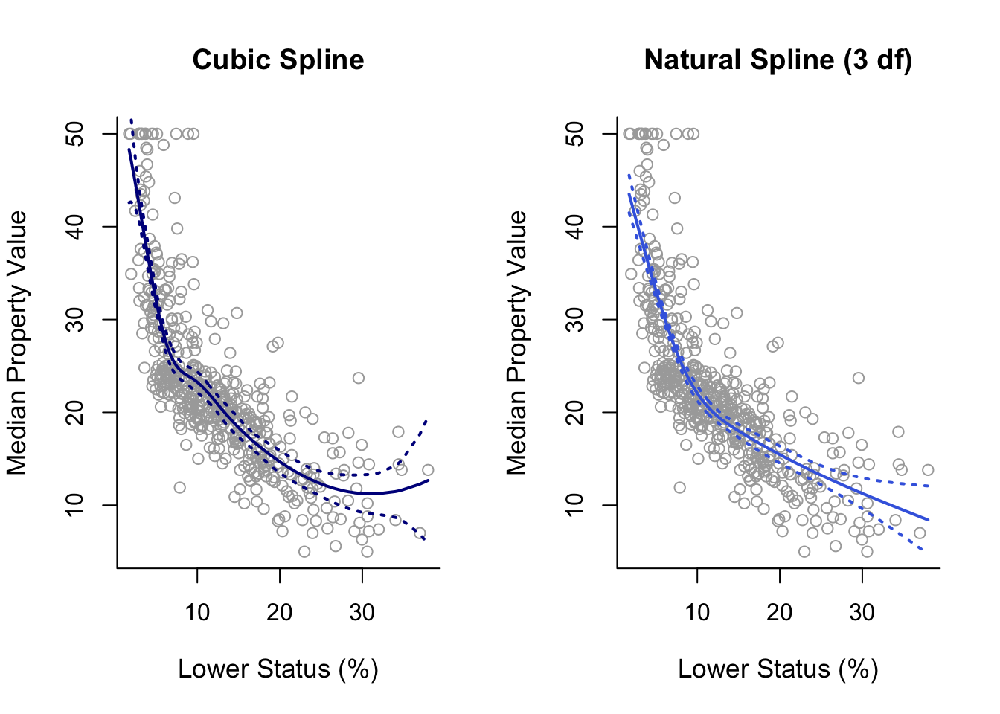
Smoothing Splines
For fitting smoothing splines we use the command smooth.splines() instead of lm(). Under smoothing splines there are no knots to specify; the only parameter is \(\lambda\). This can be specified via cross-validation by specifying cv = TRUE inside smooth.splines(). Alternatively, we can specify the effective degrees of freedom which correspond to some value of \(\lambda\). Below we first fit a smoothing spline with 3 effective degrees of freedom (via the argument df = 3), and then also by tuning \(\lambda\) via cross-validation. In this case we see that tuning \(\lambda\) through cross-validation results in a curve which is slightly wiggly on the right boundary of the predictor space.
smooth1 =smooth.spline(x, y, df =3)smooth2 =smooth.spline(x, y, cv =TRUE)
Warning in smooth.spline(x, y, cv = TRUE): cross-validation with non-unique 'x'
values seems doubtful
par(mfrow =c(1,2))plot(x, y, cex.lab =1.1, col="darkgrey", xlab = x.lab, ylab = y.lab, main ="Smoothing Spline (3 df)", bty ='l')lines(smooth1, lwd =2, col ="brown")plot(x, y, cex.lab =1.1, col="darkgrey", xlab = x.lab, ylab = y.lab, main ="Smoothing Spline (CV)", bty ='l')lines(smooth2, lwd =2, col ="darkorange")
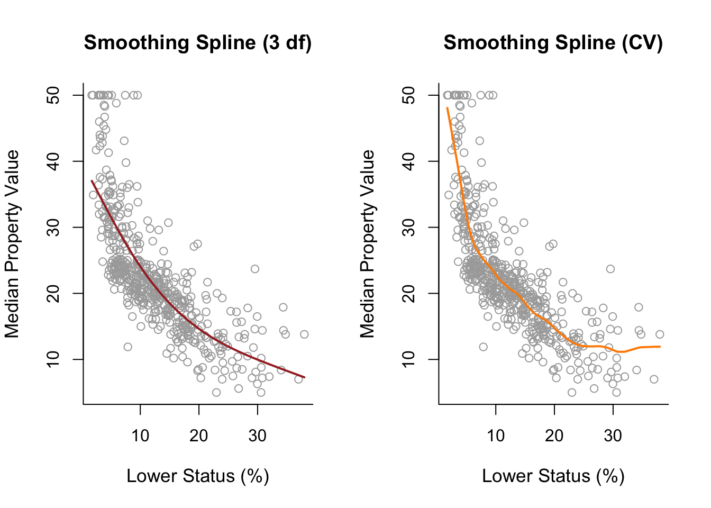
Note: the effective degrees of freedom of a smoothing spline are similar to the degrees of freedom in standard spline models and can be used as an alternative to cross-validation as a way to fix \(\lambda\).
GAMs
In this final part we will fit a generalised additive model (GAM) utilising more than one predictor from the Boston dataset.We first use the command names() in order to check once again the available predictor variables.
Let’s say that we want to use predictors lstat, indus and chas for the analysis (use ?Boston again to check what these refer to).
For GAMs we will make use of the library gam, so the first thing that we have to do is to install this package by executing install.packages("gam") once. Then we load the library.
library(gam)
The main function is gam(). Inside this function we can use any combination of non-linear and linear modelling of the various predictors. For example below we use a cubic spline with 5 degrees of freedom for lstat, a smoothing spline with 5 degrees of freedom for indus and a simple linear model for variable chas. We then plot the contributions of each predictor using the command plot(). As we can see, GAMs are very useful as they estimate the contribution of the effects of each predictor.
gam =gam( medv ~bs(lstat, degree =3, df =5) +s(indus, df =5) + chas, data = Boston )par( mfrow =c(1,3) )plot( gam, se =TRUE, col ="blue" )
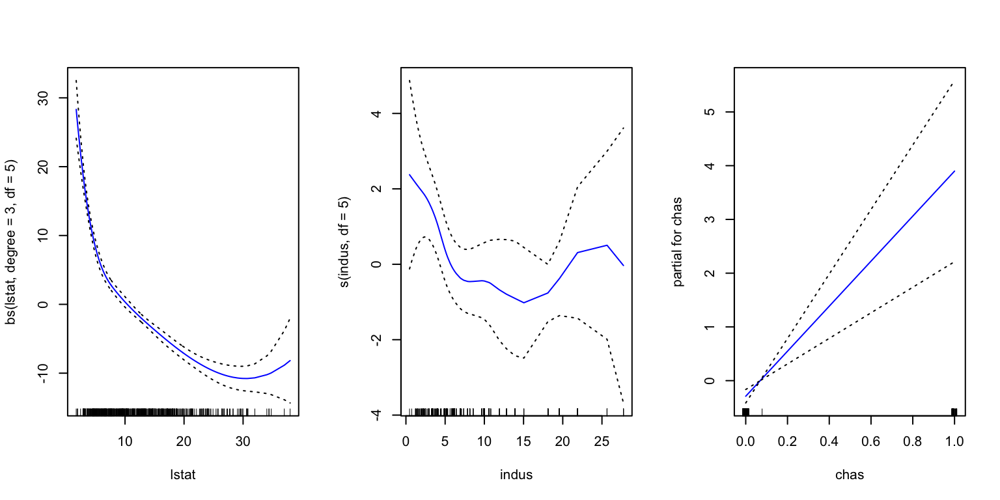
Note that simply using chas inside gam() is just fitting a linear model for this variable. However, one thing that we observe is that chas is a binary variable as it only takes the values of 0 and 1. This we can see from the x-axis of the chas plot on the right above. So, it would be preferable to use a step function for this variable. In order to do this we have to change the variable chas to a factor. We first create a second object called Boston1 (in order not to change the initial dataset Boston) and then we use the command factor() to change variable chas. Then we fit again the same model. As we can see below now gam() fits a step function for variable chas which is more appropriate.
Boston1 = BostonBoston1$chas =factor(Boston1$chas)gam1 =gam( medv ~bs(lstat, degree =3, df =5) +s(indus, df =5) + chas, data = Boston1 )par(mfrow =c(1,3))plot(gam1, se =TRUE, col ="blue")
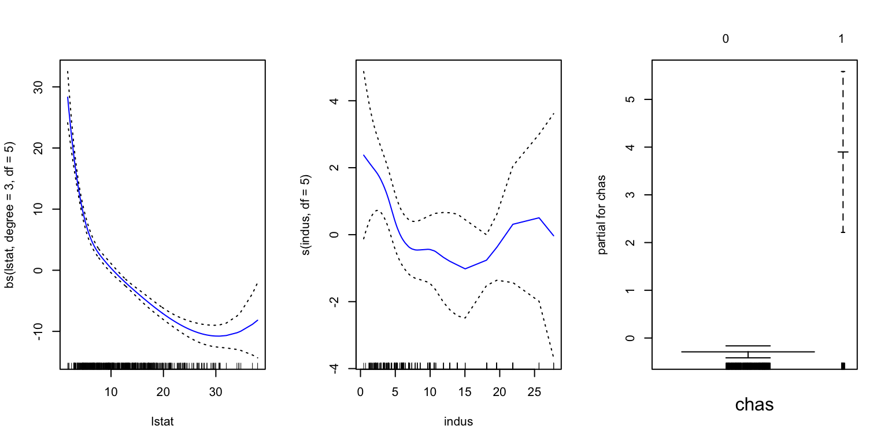
We can make predictions from gam objects, just like lm objects, using the predict() method for the class gam. Here we make predictions on some new data. Note that when assigning the value 0 to chas, we enclose it in “” since we informed R to treat chas as a categorical factor with two levels: “0” and “1”.